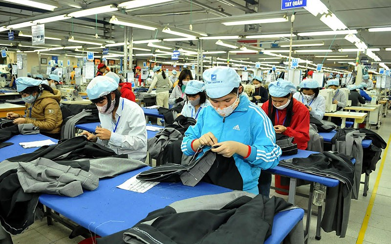
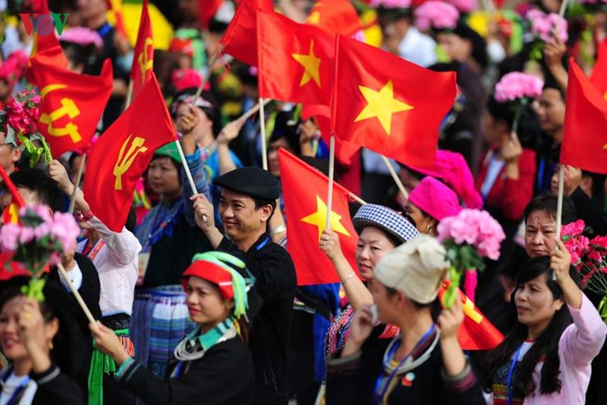

<!-- Stats Section with Content -->
    <section class="content-section" id="FollowTheDeman">
  <div class="container">
    <header class="section-header">
      <h2 class="section-title">Hướng theo nhu cầu</h2>
      <p class="section-subtitle">Mục tiêu cao nhất của xã hội cộng sản: “làm theo năng lực, hưởng theo nhu cầu”.</p>
      <div class="tag-chips">
        <span class="chip">CNCS</span>
        <span class="chip">Công hữu</span>
        <span class="chip">Phát triển con người</span>
      </div>
    </header>

    <div class="alternating-layout-container">
      <!-- Row 1 -->
      <div class="content-row reveal">
        <div class="text-col">
          <article class="feature-card">
            <div class="card-header">
              <span class="card-kicker">Khái niệm cơ bản</span>
              <h3 class="card-title">Công thức tổng quát</h3>
            </div>
            <p>“Làm theo năng lực, hưởng theo nhu cầu”.</p>
            <ul class="checklist">
              <li>Lực lượng sản xuất phát triển cao – của cải xã hội dồi dào, vượt qua khan hiếm.</li>
              <li>Chế độ công hữu vững chắc – sở hữu tư liệu sản xuất mang tính xã hội.</li>
              <li>Ý thức xã hội cao – con người tự giác vì lợi ích chung.</li>
              <li>Năng suất lao động xã hội cao – phân phối theo nhu cầu chính đáng.</li>
            </ul>
          </article>
        </div>
        <div class="image-col">
          
        </div>
      </div>

      <!-- Row 2 -->
      <div class="content-row reveal">
        <div class="text-col">
          <article class="feature-card">
            <div class="card-header">
              <span class="card-kicker">Nội dung và đặc điểm</span>
              <h3 class="card-title">Đặc trưng xã hội</h3>
            </div>
            <ul class="checklist">
              <li>Phân phối theo nhu cầu chính đáng của mỗi cá nhân.</li>
              <li>Xóa bỏ phân hóa giàu nghèo; không còn bóc lột.</li>
              <li>Đảm bảo đầy đủ nhu cầu thiết yếu và phát triển của con người.</li>
              <li>Lao động là nhu cầu tự thân: tự do, sáng tạo, không bị cưỡng bức.</li>
            </ul>
            <div class="pill-row">
              <span class="pill">Bình đẳng</span>
              <span class="pill">Tự do</span>
              <span class="pill">Sáng tạo</span>
            </div>
          </article>
        </div>
        <div class="image-col">
          
        </div>
      </div>

      <!-- Row 3 -->
      <div class="content-row reveal">
        <div class="text-col">
          <article class="feature-card">
            <div class="card-header">
              <span class="card-kicker">Ý nghĩa & Tóm tắt</span>
              <h3 class="card-title">Tầm nhìn tương lai</h3>
            </div>
            <ul class="checklist">
              <li>Mục tiêu cao nhất của xã hội cộng sản.</li>
              <li>Phát triển toàn diện con người.</li>
              <li>Xây dựng xã hội lý tưởng, văn minh, công bằng.</li>
            </ul>
            <p>Tóm lại “Hướng theo nhu cầu” chỉ có thể thực hiện khi xã hội đạt trình độ phát triển rất cao – là đích đến của quá trình xây dựng CNXH và CNCS.</p>
          </article>
        </div>
        <div class="image-col">
          
        </div>
      </div>
    </div>
  </div>
</section>